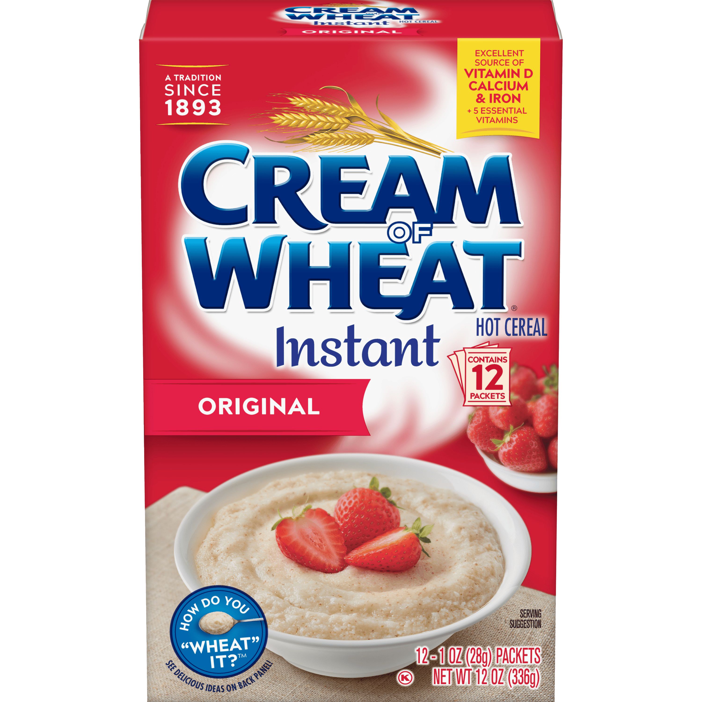

Cream of Wheat

Cream of Wheat is a brand of farina, a hot breakfast porridge mix made from ground wheat middlings.
Ingredients
- 1 cup water
- 1/4 teaspoon salt (optional)
- 1/4 cup cream of wheat
- Milk
- Sweeteners or flavorings of your choice (sugar, honey, maple syrup, cinnamon.)
Instructions